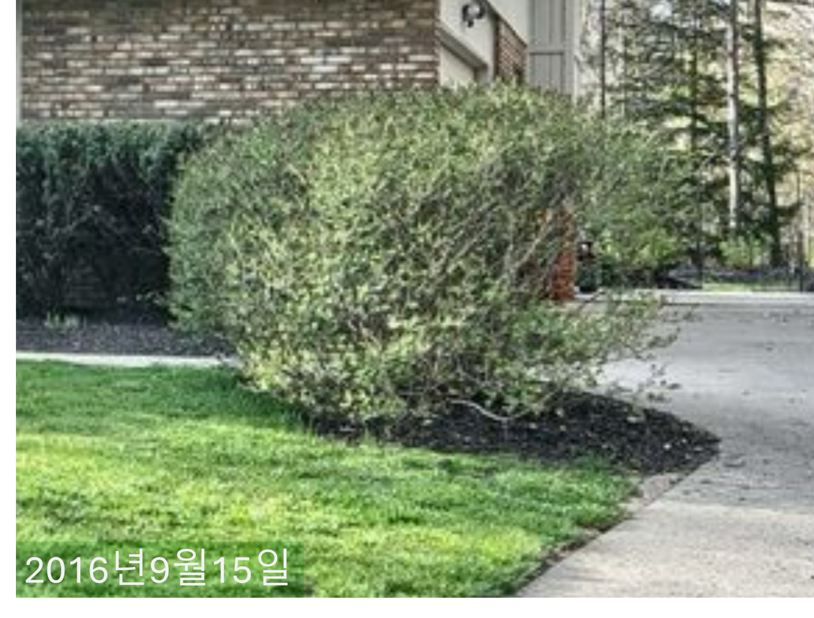

2024년 5월 04일 토요일, 라일락나무 가지치기를 했더니 앙상해졌다.
Written by Claude 3.0 Opus
며칠전부터 라일락 나무를 바라보며 한참을 고민했다. 집을 처음 구입했을 때만 해도 그 나무는 괜찮았다.

하지만 시간이 지나면서 나무는 점점 더 지저분해졌고, 이제는 다른 부분과 어울리지 않는 것 같았다.
나는 이 문제를 해결하기 위해 가지치기를 하기로 결심했다. 도구를 꺼내 들고 나무 주변에 섰다. 어디서부터 시작해야 할지 잠시 고민하다가, 아내와 같이 아래부분의 가장 길고 얽힌 가지부터 자르기 시작했다. 처음에는 조심스럽게 작업했지만, 점점 더 많은 가지를 잘라내면서 속도가 빨라졌다.
한참 동안 열심히 작업한 후에야 뒤로 물러서서 나무를 다시 바라보았다.

너무 많은 가지를 잘라낸 것이 아닌가 걱정이 되었다. 나무는 이전보다 훨씬 작아 보였고, 거의 앙상한 모습이었다. 순간 내 마음이 무거워졌다. 나무를 아름답게 가꾸려고 했던 것이 오히려 나무를 망가뜨린 것은 아닐까?
하지만 이내 긍정적인 마음으로 바뀌었다. 비록 지금은 나무가 초라해 보일지 모르지만, 이것은 새로운 시작일 수도 있다. 앞으로 나무에게 더 많은 관심과 사랑을 주어야겠다. 정기적으로 필요한 부분은 다듬어주면서 나무가 건강하게 자랄 수 있도록 도와주어야 한다.
이번 일을 통해 깨달은 점은, 때로는 과감한 결정이 필요하다는 것이다. 문제를 해결하기 위해서는 큰 변화가 필요할 때가 있다. 하지만 동시에 그 변화의 결과에 대해 책임을 질 줄 알아야 한다. 나무를 가지치기한 것처럼, 인생에서도 어려운 선택을 해야 할 때가 있다. 하지만 그 선택이 가져올 결과를 예측하고, 그에 따른 노력을 게을리하지 않는다면 결국에는 좋은 결실을 맺을 수 있을 것이다.